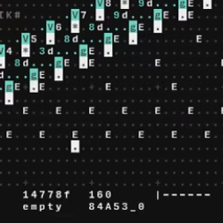
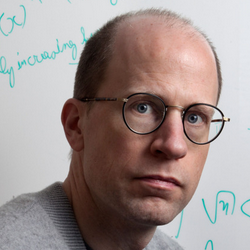
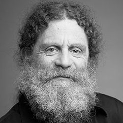
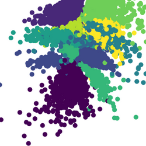
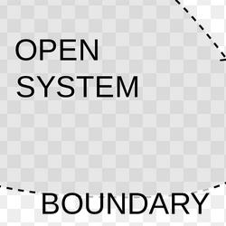

Free videos!
Can you believe it?
| Video Name | Video Description | Video Length | Youtube Channel | |
|---|---|---|---|---|
|  | Orca Sequencing Intro (Experimental Livecoding!) |
Heya! I'm still working on my doubleknot+mosstone vid, but I wanted to make a quick informal video on this cool software in the meantime - it's pretty impromptu and not the best audio quality but I hope you still enjoy it! Let me know what you think in the comments and maybe I can do a series of videos exploring ORCA a little bit further and making some complete songs :) By the way, I didn't mention it in this video, but the couple who developed this software live in a studio on a sailboat, where they develop cool open source tools for artist! How rad is that?? :) Correction, by the way: ORCA uses Base 36 numbers, not 36-Bit, and l was thinking of UDP, not OSC (though it also has OSC capabilities). |
22:01 | Allieway Audio |
|  | What Happens When Our Computers Get Smarter Than We Are | Artificial intelligence is getting smarter by leaps and bounds — within this century, research suggests, a computer AI could be as "smart" as a human being. And then, says Nick Bostrom, it will overtake us: "Machine intelligence is the last invention that humanity will ever need to make." A philosopher and technologist, Bostrom asks us to think hard about the world we're building right now, driven by thinking machines. Will our smart machines help to preserve humanity and our values — or will they have values of their own? | 16:31 | TED |
|  | Stanford's Sapolsky on Depression in the U.S. | Stanford Professor Robert Sapolsky, posits that depression is the most damaging disease that you can experience. Right now it is the number four cause of disability in the US and it is becoming more common. Sapolsky states that depression is as real of a biological disease as is diabetes. | 52:29 | Stanford |
| How AlphaGo Zero Works - Google DeepMind | In this episode I dive into the technical details of the AlphaGo Zero paper by Google DeepMind. This AI system uses Reinforcement Learning to beat the world's Go champion using only self-play, a remarkable display of clever engineering on the path to stronger AI systems. | 12:13 | Arxiv Insights | |
|  | Progressive Growing of GANs for Improved Quality, Stability, and Variation |
Final result video of our paper, published at ICLR 2018.
Abstract:
|
5:43 | Tero Karras FI |
| Waking Life Scene - Same pattern over and over | An(other) interesting scene from Waking Life, starring Ryan Power. | 1:12 | Viqing | |
|  | Systems Thinking | A short video explaining the primary differences between analytical methods of reasoning and systems thinking while also discussing the two methods that underpin them; synthesis and reductionism. | 5:40 | Systems Innovation |
| Billy on the Street: Lightning Round (Name a Woman!) | Billy asks people on the streets of New York to name 3 white people and other pressing questions. He also tries to find out if The Berenstain Bears were Jewish. | 1:35 | billyonthestreettv |